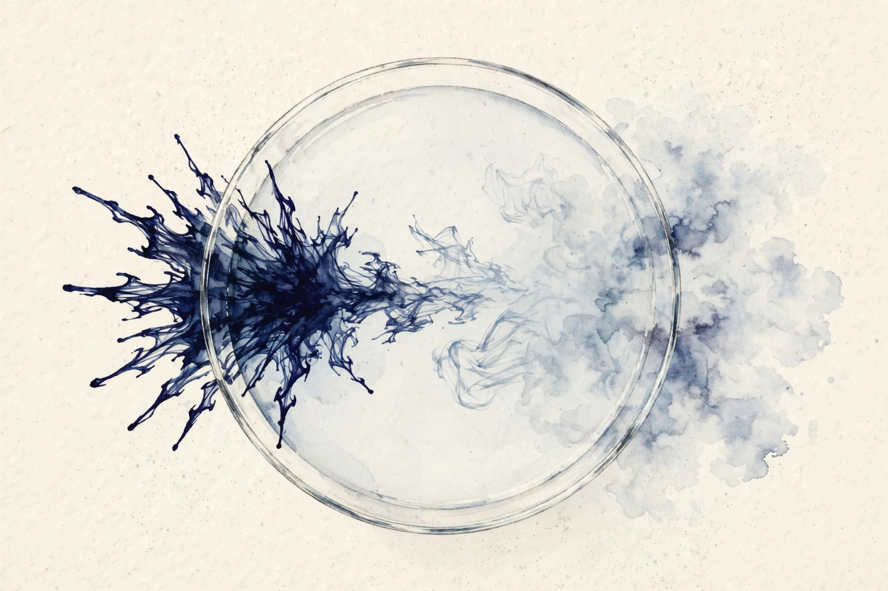

Companion · narrated from the lesson document
Generative modeling means sampling new data. How do you train a model to produce samples when you only have a dataset of examples? This companion walks the full arc of Unit 12: the fixed forward Gaussian chain, the true reverse posterior, the ELBO's reduction to noise prediction, sampling, the score relation, and the assumptions the whole construction stands on.
From the lesson The idea, and every number beside it, comes from the cited section of lesson-12-diffusion-models.md. The phrasing is the companion's.
Illustration Invented by the companion: an analogy, a toy with made-up values, or a what-if. Never lecture content.
companion Companion voice: the idea above the tag is from the lesson. The generalization below it is the companion's.
Provenance: the lesson notes that a Lecture 11 transcript covers diffusion (SRC-02), but only its headers were inspected. Its content was not read in depth. No lecture video is named. The lesson's Source mapping states that SRC-01 chapter 14 (PDF pages 181 to 190) was read in full on 2026-10-06. Pixel discretization and held-out ELBO evaluation are standard background beyond the notes' inspected text, labeled as such. All lesson numbers below were independently recomputed for this page and matched. Leaf rows carry SOURCE ATTRIBUTION PENDING until the RUN 6 pass.

Section 1 · SL-01 · C01, C02
From the lessonSL-01 §Source anchor, §Mental model
The forward process is a fixed Markov chain x₀, x₁, ..., x_T with x₀ drawn from the data distribution. Each step adds a small Gaussian perturbation: q(x_t | x_{t-1}) = N(x_t. √(1−β_t) x_{t-1}, β_t I) (14.1). The betas live in (0, 1) and are small in practice, about 1e-4 to 1e-2. Write α_t = 1 − β_t. The forward chain turns any image into white noise through hundreds of tiny Gaussian steps. Because every step is Gaussian and the schedule is fixed, the noisy state at any time step has a closed form. The learning problem then becomes: given a noisy sample at time t, recover the noise that was added. That is noise removal, not generation, and it is a supervised task with ground truth available from the forward chain itself.
From the lessonSL-01 §The closed form, §Covariance interpolation
Unroll x_t = √α_t x_{t-1} + √β_t ε_t. With ᾱ_t = α₁·...·α_t: x_t = √ᾱ_t x₀ + √(1−ᾱ_t) ε̂_t, ε̂_t drawn from N(0, I) (14.5). Each step interpolates the covariance toward the identity: Cov(x_t) = α_t Cov(x_{t-1}) + β_t I (14.4). In the limit, q(x_T | x₀) tends to N(0, I) for every x₀ (14.10).
| T = 100, β linear from 1e-4 to 0.02, x₀ = 3.0 | Value |
|---|---|
| ᾱ_50 | 0.7772 |
| x_50 mean: √0.7772 × 3.0 | 2.6447 |
| x_50 variance: 1 − 0.7772 | 0.2228 |
| x_50 std | 0.4720 |
Illustration The forward-state oracle. Type a time step t (1 to 100) for the lesson's 1-D toy with x₀ = 3.0. The toy computes ᾱ_t from the linear schedule and reports the mean and standard deviation of x_t.
t:
The lesson's checks: ᾱ_t must decrease monotonically. Try t = 1 and t = 100.
Destroy on purpose, then learn to undestroy. The forward chain creates its own supervision.
Section 2 · SL-02 · C03, C04
From the lessonSL-02 §Source anchor, §Mental model
We do not know the reverse conditionals, so we approximate each one with a Gaussian whose mean comes from a neural network: p_θ(x_{t-1} | x_t) = N(x_{t-1}. μ_θ(x_t, t), σ_t²I) (14.12). Each reverse step is a small denoising move. For small steps, a Gaussian with a learned mean is enough. The network sees the noisy state and the time step, and outputs where the state should move. Sampling starts at white noise and walks backward to a clean sample.
From the lessonSL-02 §The true reverse posterior is Gaussian, §Matching the variance
Conditioning on x₀ as well as x_t, the true reverse kernel is tractable: q(x_{t-1} | x_t, x₀) = N(x_{t-1}. μ̃_t(x_t, x₀), β̃_t I) (14.18), with β̃_t = (1−ᾱ_{t-1})/(1−ᾱ_t)·β_t. The mean is a weighted average of x₀ and x_t: a tug toward the clean sample and a tug toward the current noisy state. Choose σ_t² = β̃_t. Then the learned reverse kernel and the true posterior have the same covariance, and the KL is half the squared Mahalanobis distance of the means: KL = (1/(2β̃_t))||μ̃_t − μ_θ||² (14.20-14.21). Training must match one mean vector. Nothing else is learned.
| SL-01 schedule, x₀ = 3.0, toy x_50 = 3.0420 | Value |
|---|---|
| β̃_50 | 0.00960 |
| μ̃_50 from (14.19) | 3.0394 |
| (14.19) vs (14.22) over 61 values of x_t | agree to 1.8e-15 |
Match the variance, and training must match one mean vector. Nothing else is learned.
Section 3 · SL-03 · C05, C06, C07
From the lessonSL-03 §Source anchor, §ELBO terms
The goal is to maximize log p_θ(x₀), which integrates over the whole path (14.14) and is intractable. With the forward chain as the auxiliary distribution, the ELBO identity gives log p_θ(x₀) ≥ E_q[log p_θ(x₀:T) / q(x₁:T | x₀)] (14.15). The KL splits into a sum over time steps (14.16). L_T has no parameters and is dropped. L₀ is the reconstruction term, and L₁ ... L_{T-1} are noise-removal terms, each asking the reverse kernel to match the true Gaussian posterior of SL-02.
From the lessonSL-03 §The denoising reduction, §Prediction parameterizations
Recovery of μ̃_t is equivalent to recovery of the noise ε̂_t. The network predicts ε (noise prediction): by the algebra, this equals direct estimation of x₀ or μ̃_t. In practice the weights are dropped and the model trains on the unweighted loss L_t(θ) = ||ε − ε_θ(x_t, t)||² (14.28), with x_t = √ᾱ_t x₀ + √(1−ᾱ_t) ε. The training algorithm: (1) sample a clean x₀ from the data. (2) sample t uniformly from {1, ..., T}. (3) sample ε from N(0, I). (4) form x_t by (14.27). (5) take a gradient step on (14.28). One sample, one time step, one noise vector per update. No labels. The forward chain creates its own supervision.
| 1-D toy: x₀ = 3.0, t = 50, drawn ε = 0.8417 | Value |
|---|---|
| x_50 = 2.6447 + 0.4720 × 0.8417 | 3.0420 |
| Oracle noise predictor | recovers ε exactly |
| Predictor off by δ | adds δ² to the unweighted loss |
Illustration The denoising-loss bench. The lesson's toy: true noise ε = 0.8417. Type the network's prediction. The toy reports the unweighted loss (14.28).
ε_θ:
Try the oracle (0.8417) and a guess off by 0.1: the loss adds δ².
From the lessonSL-03 §Failure case
Training with the exact ELBO weights instead of the unweighted loss puts heavy weight on small t (near-clean steps). Ho et al. found this hurts sample quality. The weights are correct for likelihood, wrong for perceptual quality. This is the sampling-objective versus training-objective split from U01.
The weights are correct for likelihood, wrong for perceptual quality.
Section 4 · SL-04 · C08, C09, C10
From the lessonSL-04 §Source anchor, §Mental model
At test time, start from x_T drawn from N(0, I) and iterate t = T down to 1: form the mean μ_θ(x_t, t) by (14.23) and sample x_{t-1} = μ_θ(x_t, t) + σ_t ξ, ξ drawn from N(0, I) (14.29), with ξ = 0 at the final step. Sampling runs training backward in time. In continuous time, Anderson's reverse-time theorem says the reversed process is also a diffusion, with drift −f + g² times the score ∇_x log p_t (14.32). The reverse drift needs to know which directions increase the marginal density at that noise level. That direction is exactly the score.
From the lessonSL-04 §The score relation
From the closed form (14.5), the score of the conditional is ∇_x log q(x_t | x₀) = −ε̂_t / √(1−ᾱ_t). The score is the negative noise, rescaled. Predicting ε and predicting the score are the same task up to a known scalar. This is the bridge between DDPMs and score-based models (Song et al. [2021], cited in the chapter introduction).
| SL-03 toy: x_t = 3.0420, √ᾱ_50 = 0.8816, 1 − ᾱ_50 = 0.2228 | Value |
|---|---|
| Score: −(3.0420 − 0.8816 × 3.0)/0.2228 | −1.7829 |
| Rescaled noise: −0.8417/0.4720 | −1.7829 |
| Agreement | exact (script: 1e-10, finite differences 1e-6) |
The score is the negative noise, rescaled. Predicting ε and predicting the score are the same task.
Section 5 · SL-05 · C11, C12
From the lessonSL-05 §Assumptions that carry the construction
Five load-bearing assumptions: (1) q(x_T) is exactly N(0, I). The notes assume this after arguing ᾱ_T is near zero. If the schedule stops too early, sampling starts from the wrong prior. (2) β_t small. Tiny perturbations justify Gaussian reverse kernels and the discrete approximation of the reverse SDE. (3) σ_t² = β̃_t. The variance is fixed, not learned. The mean carries the model. (4) Images are continuous. Real pixels are discrete. Ho et al. [2020] section 3.3 adds truncation and discretization on top of the continuous model. Without this, likelihood numbers on images are not comparable across papers. (5) The unweighted loss is not the ELBO. It is a reweighting chosen for sample quality. Likelihood claims must use the exact ELBO.
From the lessonSL-05 §Held-out evaluation, §Failure case
The ELBO is a lower bound on log likelihood for any data point, train or held-out. Evaluating the exact weighted ELBO on held-out data gives a comparable number across models. Two caveats: it is a bound, not the likelihood, so a looser bound can hide a better model, and the bound is only comparable when the discretization handling is identical. Comparing ELBOs computed with different discretization or different T: the numbers are meaningless. Fix the evaluation protocol first.
Report the weighted ELBO for evaluation, never the unweighted training loss.
Section 6 · Synthesis
From the lessonSL-01 to SL-05
The arc, end to end. A fixed Markov chain adds small Gaussian steps until any image becomes white noise, and the closed form x_t = √ᾱ_t x₀ + √(1−ᾱ_t) ε̂_t makes every intermediate state directly samplable (SL-01). The true reverse posterior, conditioned on x₀, is Gaussian with a mean that tugs toward the clean sample and the noisy state. Fixing the variance to β̃_t reduces training to the match of one mean vector (SL-02). The ELBO splits over time steps, and the posterior-mean algebra turns every term into a noise-prediction error. The unweighted loss trains better samples than the exact weights (SL-03). Sampling walks the chain backward, and the score is the negative noise rescaled: DDPMs and score-based models are one program (SL-04). The construction stands on five assumptions, and evaluation reports the weighted ELBO, never the training loss (SL-05).
From the lesson§Research reading, §Role bridges
Where the unit points next, in the lesson's own forward links. Read SRC-01 chapter 14 in full, Ho et al. [2020] sections 1-3, Song et al. [2021] sections 1-2. The extension: fit a tiny ε-predictor on a 2-D toy distribution and compare samples against the true distribution. The falsifiable claim: the MMD between generated and true samples falls below the MMD of a Gaussian fit. For the ML engineer: diffusion is the standard image and video generator. The training loop is five lines, and the schedule is the main hyperparameter. For the research engineer: the posterior-mean algebra is the template for all denoising objectives, and the score relation links DDPM and score-based code. For the research scientist: the reverse-time theorem explains why Gaussian kernels are principled. Know the assumptions before trusting likelihood numbers.
Wisdom index
Each nugget states the idea in plain words, why it matters, and the transferable principle. Every one is anchored to its lesson section.